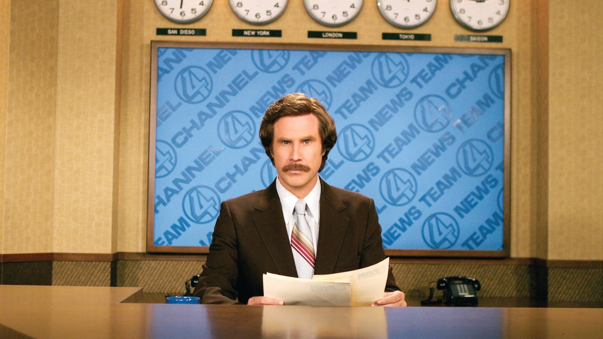

KVWN-TV Channel 4
San Diego, Friday night
SAN DIEGO 6:00
NEW YORK 9:00
LONDON 2:00
TOKYO 11:00
SAIGON 10:00

Ron Burgundy
Channel 4 News, weeknights at six.
PROMPT 4
YOU STAY CLASSY, SAN DIEGO.

The News Team. Number one in San Diego.
Station party and supper
NEWS
TEAM
NIGHT
Supper, drinks and the whole Channel 4 family. The rundown is inside.
From the desk of Ron Burgundy
Tonight we eat like kings and drink like gentlemen. I don’t want to brag, but I am kind of a big deal.
Ron Burgundy
Admit one
JAZZ
FLUTE
Ron Burgundy, late set.
He will play on.